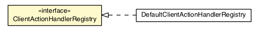

com.gwtplatform.dispatch.client.actionhandler
Interface ClientActionHandlerRegistry

- All Known Implementing Classes:
- DefaultClientActionHandlerRegistry
public interface ClientActionHandlerRegistry
Implementations of this interface will be used by
DispatchAsync
implementation to find client-side action handlers.
- Author:
- Brendan Doherty
|
Method Summary |
|
find(Class<A> actionClass)
Gets the client-side action handler that supports the specific action. |
find
<A extends Action<R>,R extends Result> IndirectProvider<ClientActionHandler<?,?>> find(Class<A> actionClass)
- Gets the client-side action handler that supports the specific action.
- Returns:
- The the client-side action handler , or
null if no
appropriate client-side action handler could be found.
Copyright © 2010-2013 ArcBees. All Rights Reserved.